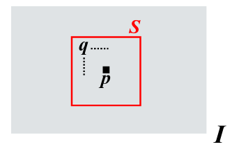

It is a non-linear Image filters
that deals with Gaussian noise without blurring the image like Mean filter
and Gaussian filter
.
The formula of a bilateral filter is:
O(p)=q∈S∑H(p,q)∗IqH(p,q)=W(p)1Gσs(ds(p,q))Gσr(dr(p,q))ds(p,q)=∣∣p−q∣∣2=(up−uq)2−(vp−vq)2→spatial distancedr(Ip,Iq)=∣Ip−Iq∣→range/intensity distanceW(p)=q∈s∑Gσs(ds(p,q))Gσr(dr(p,q))→normalization factor

In practice, the filter takes into account both the spatial and the color distance of the pixels and uses it to increase or lower the influence of the neighbors pixels on the intensity of the current one.